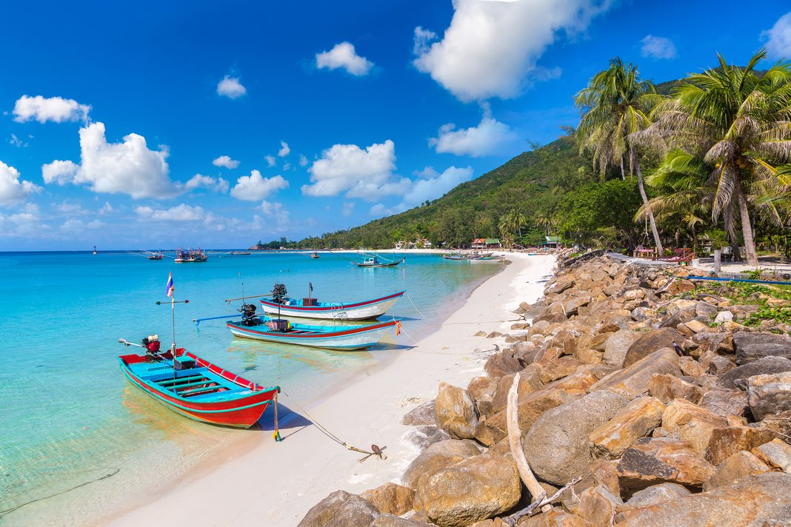

An Insider's Guide to Thailand
Thailand can be amazingly fun & incredibly overwelming, especially if you've never been.
Luckly, I'm here to give you an insiders's guide and make your first trip a pleasurable experience.
By taking my tips and tricks, and following your gut, you will have an unforgettible experience.
Getting Flight Tickets
Flights to Thailand can be booked relatively inexpensively, depending on the time of the year.
We'd always recommend booking through British Airways - they flight direct from London 5 times a week!
Getting Around
Getting around Thailand isn't difficult. There is a plethora of public transport and travel agents who are able to provide information.